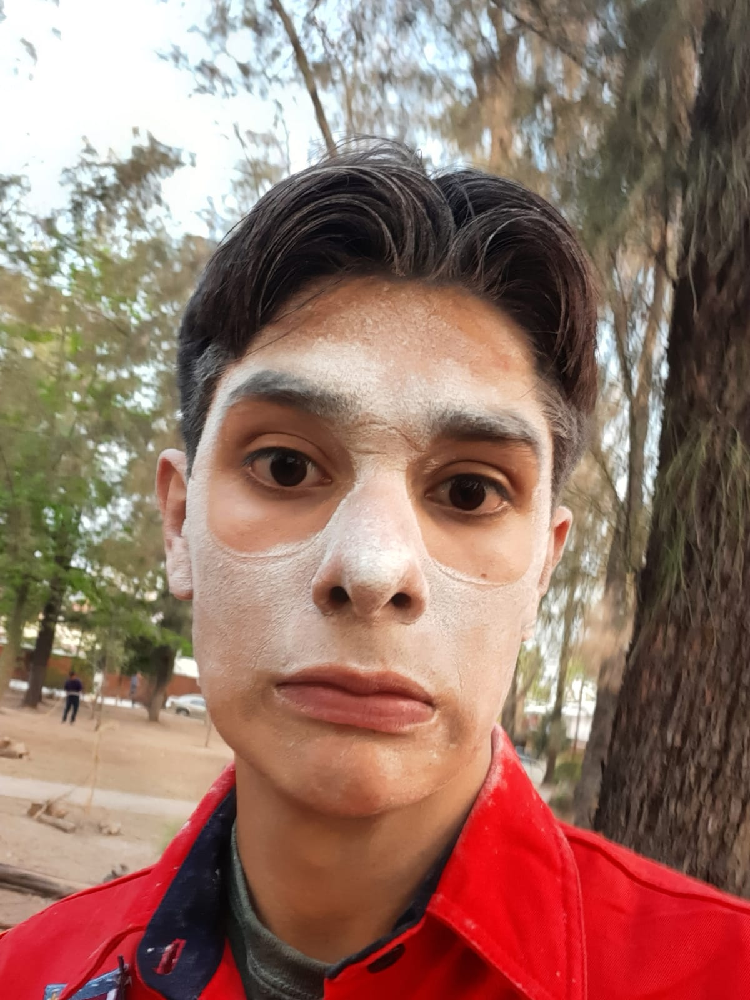

Santiago Ayon Sanchez

Soy santiago, estudiante de la carrera ciencia de datos en ITESO y quiero ser
programador de AI.
Educación
- Primaria - Colegio Reforma. Link
- Secundaria - Colegio Champagnat. Link
- Preparatoria - CETI Colomos. Link
- Universidad - ITESO. Link
Experiencia laboral
-
Bodega
Trabaje de ayudante en una bodega.
-
R-FAM
Desarrollamos un proyecto personal de un Robot que corta madera, intentado que siguiera
trayectorias.
Habilidades
- Ingles Intermedio
- Programacion en Python y Arduino
- Buena logica matemática y de programación
Otros